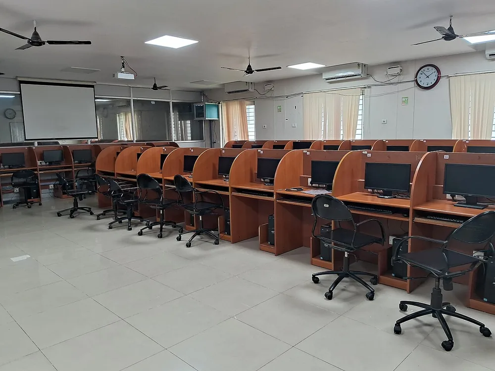

<!doctype html>
<html lang="ro">
<head>
<meta charset="utf-8">
<meta name="viewport" content="width=device-width, initial-scale=1, viewport-fit=cover">
<title>Lecția 26, clasa a VI-a: Evaluare sumativă: structuri repetitive</title>
<meta name="description" content="Lecția 26, clasa a VI-a: evaluare sumativă, structuri repetitive. Cum arată proba practică (două probleme cu repetiție și urmărirea unui algoritm dat, pe trei niveluri), cum se notează (C, B, A, oficiul, nota = punctaj : 10) și o probă de antrenament cu punctaj, în Scratch simulat și în tabelul de urmărire.">
<link rel="preconnect" href="https://fonts.googleapis.com">
<link rel="preconnect" href="https://fonts.gstatic.com" crossorigin>
<link rel="stylesheet" href="https://fonts.googleapis.com/css2?family=Baloo+2:wght@600;800&family=Nunito+Sans:ital,wght@0,400;0,600;0,700;1,400&family=Fira+Code:wght@500;600&display=swap&subset=latin-ext">
<link rel="stylesheet" href="../../../jocuri/_motor/motor.css">
<style>
:root{
  --desk:#EEF5F8; --paper:#FFFFFF; --paper2:#F1F7FA; --line:#CFE0E8;
  --ink:#16303B; --ink2:#4E6B78; --accent:#1F7A9E; --accentInk:#FFFFFF; --sel:#DCEFF6;
  --mark:#FFE07A; --markInk:#16303B; --ok:#1E7A46; --okbg:#E0F2E6; --bad:#B8362E; --badbg:#FAE4E2;
  --fd:"Baloo 2","Segoe UI",system-ui,sans-serif; --fb:"Nunito Sans","Segoe UI",system-ui,sans-serif; --fm:"Fira Code",Consolas,monospace;
}
@media (prefers-color-scheme:dark){:root:not([data-theme="light"]){
  --desk:#0F1D23; --paper:#16262E; --paper2:#1D313A; --line:#2F4A56;
  --ink:#E4F0F5; --ink2:#A6C1CC; --accent:#7CC6E4; --accentInk:#0F1D23; --sel:#24414D;
  --mark:#EBC95C; --markInk:#16303B; --ok:#6CCB8F; --okbg:#18301F; --bad:#FF877B; --badbg:#3A1E1B;
}}
:root[data-theme="dark"]{
  --desk:#0F1D23; --paper:#16262E; --paper2:#1D313A; --line:#2F4A56;
  --ink:#E4F0F5; --ink2:#A6C1CC; --accent:#7CC6E4; --accentInk:#0F1D23; --sel:#24414D;
  --mark:#EBC95C; --markInk:#16303B; --ok:#6CCB8F; --okbg:#18301F; --bad:#FF877B; --badbg:#3A1E1B;
}
/* tema: blocurile Scratch ale unității (Evenimente, Control, Operatori, Mișcare) */
.banda{display:flex;align-items:center;gap:4px;padding:7px 12px;white-space:nowrap;overflow:hidden;background:var(--paper2);border-bottom:2px solid var(--accent);font-family:"Helvetica Neue","Segoe UI",Arial,sans-serif;font-size:.72rem;font-weight:700;color:#fff}
.banda .bk{flex:none;display:inline-block;padding:4px 10px;border-radius:5px;border:1px solid rgba(0,0,0,.18)}
.banda .ev{background:#FFBF00;color:#3A2A00;border-radius:14px 14px 5px 5px}
.banda .ct{background:#FFAB19;color:#3A2A00}
.banda .op{background:#59C059;clip-path:polygon(10px 0,calc(100% - 10px) 0,100% 50%,calc(100% - 10px) 100%,10px 100%,0 50%);padding:4px 14px}
.banda .mv{background:#4C97FF}
h1,h2{font-weight:800;letter-spacing:0}
h1 .acc{color:var(--accent)}
code{font-family:var(--fm);font-size:.9em}
.acum{border:2px dashed var(--accent);border-radius:10px;background:var(--paper2);padding:8px 12px;margin:12px 0 4px}
.acum .lbl{font-family:var(--fd);font-weight:800;color:var(--accent);margin-bottom:2px}
.acum ol{margin:.2em 0 .2em 1.2em;padding:0}
.acum li{margin:.15em 0}
.parti{border-collapse:collapse;margin:.4em 0;font-size:.95rem}
.parti th,.parti td{border:1px solid var(--line);padding:4px 8px;text-align:left;vertical-align:top}
.parti th{background:var(--paper2)}
.regula{border-left:4px solid var(--accent);background:var(--paper2);padding:6px 10px;margin:.5em 0}
.regula ol{margin:.2em 0 .2em 1.2em;padding:0}
.sursa-foto a,figcaption a{display:inline-block;padding:8px 0}
.captura>a{min-height:32px}
</style>
</head>
<body>
<script src="../../../jocuri/_motor/motor.js"></script>
<script src="../../_sim/scratch.js"></script>
<script src="../../_sim/scratch-control.js"></script>
<script src="../../_sim/scratch-conditie.js"></script>
<script src="../../_sim/scratch-variabile.js"></script>
<script src="../../_sim/urmarire-algoritm.js"></script>
<script src="../../_sim/urmarire-algoritm-repetitie.js"></script>
<script src="../../_sim/urmarire-algoritm-cattimp.js"></script>
<script src="../../_sim/urmarire-algoritm-pana-cand.js"></script>
<script src="../../_sim/schema-logica.js"></script>
<script src="../../_sim/eval-repetitii-vi.js"></script>
<script>
/* Lecția 26, clasa a VI-a (M4, EVALUARE SUMATIVĂ): „Evaluare sumativă: structuri repetitive”.
   Legea: _campaign\revizuire_completa_2026_09\00_GHID_LECTII.md (I, IV.2 §6-7). Sursele și probele: surse.md, _proba\.
   Activitatea profesorului (Info_Gimnaziu_2026\data\activitati_lectii_V_VI.json): „Probă practică: rezolvarea a două probleme
   cu repetiție și urmărirea unui algoritm dat, pas cu pas. Cerințe pe cele trei niveluri.” Resursa: „test practic de unitate,
   barem pe niveluri” — testul și baremul NU există în documentele profesorului (teste_sumative.json are doar V-U1), deci:
   pagina spune cum arată proba și dă o PROBĂ DE ANTRENAMENT pe regula de notare (C 40 + B 30 + A 20 + 10 din oficiu;
   nota = punctaj : 10, la ,5 în favoarea elevului). Cerințele și punctele pe cerințe sunt ale paginii; „Pentru profesor”
   în surse.md. NIMIC NOU predat: totul vine din lecțiile 17-25 (harta în surse.md, „Sarcina → lecția și pasul”).
   Simulatoarele, toate PUBLICATE / ale vecinilor, doar FOLOSITE: scratch.js (VI/18), scratch-control.js (VI/20),
   scratch-conditie.js (VI/21), scratch-variabile.js (VI/25), urmarire-algoritm.js (VI/17) + -repetitie.js (VI/20) +
   -cattimp.js (VI/21) + -pana-cand.js (VI/22), schema-logica.js (VI/24). NOU, al lecției: lectii/_sim/eval-repetitii-vi.js
   (punctele la prima verificare, panoul, nota, „o scăpare se pedepsește o singură dată” la tabel).
   Valorile din exemple și din „De ce” sunt CALCULATE de interpretoarele publicate, nu scrise de mână; oracolul independent:
   _proba\oracol_independent.py. Granița: _campaign\revizuire_completa_2026_09\m4_noapte_01_11\granite\vi_l26.md. */
SimScratch.stil();
const L = p => UrmarireAlgoritm.listare(p);
const UR = UrmarireRepetitie, UCT = UrmarireCatTimp, UPC = UrmarirePanaCand, SV = SimScratchVariabile, SL = SchemaLogica, ERV = EvalRepetitiiVI;
const afis = (p, d) => UrmarireAlgoritm.ruleaza(p, d || {}).afisari;
const ACUM = (...p) => `<div class="acum" role="note"><div class="lbl">Acum în Scratch, la calculator</div><ol>${p.map(x => `<li>${x}</li>`).join('')}</ol><p class="hint">Pe telefon: sari peste; pașii tăi sunt la laborator.</p></div>`;
const FIG = (s, leg, aria) => SL.figura(s, {legenda: leg, aria: aria});
/* legătura la pasul de recitit, doar de citit (?vezi=pK), cu numele pasului ca pe ecran */
const VEZI = (lectia, cale, k, nume, din) => `lecția ${lectia}, pasul <a href="../${cale}/?vezi=p${k}" target="_blank" rel="noopener">„${nume}” (pasul ${k} din ${din})</a>`;

/* ---- Scratch: ajutoare pentru teste (pe COMPORTAMENT: programul elevului e rulat de la steag, din mai multe locuri) ----
   Contează DOAR scripturile care încep cu „când se dă click pe ⚑” (ERV.laSteag), ca în Scratch: un bloc lăsat liber în
   zona de cod nu rulează și nu schimbă nimic (registrul J1, punctul A). Niciun test cu puncte nu trece pe programul de
   pornire, nici mutat, nici cu un bloc liber lângă el (punctul C; martorul: _proba/proba_reparatii.py). */
const norm = s => String(s == null ? '' : s).normalize('NFD').replace(/[̀-ͯ]/g, '').toLowerCase().replace(/[\s.!?…]+$/, '').trim();
const PAL = ['steag', 'mergi', 'mergi_la_xy', 'orienteaza', 'pozitia_x', 'spune_sec', 'repeta', 'repeta_pana', 'mai_mare', 'mai_mic', 'egal'];
const NOTA_SIM = 'În pagină sunt doar blocurile unității (Scratch are mult mai multe), iar pisica e desenată mai simplu decât în Scratch.';
const NOTA_SIM_V = 'În pagină sunt doar blocurile unității, iar pisica e mai simplă. „variabila mea” (o are orice proiect nou) nu e desenată, iar lista ▾ are doar variabilele.';
const POZ = (op, n) => [op, '', n, {s: {0: ['pozitia_x']}}];
const START = x => [['steag'], ['mergi_la_xy', x, 0], ['orienteaza', 90]];
const din = (P, x, v) => ERV.ruleazaDin(P, x, v ? {variabile: v} : null);
/* ce a spus pisica și unde era atunci: [{t, x}] */
const spuse = (R, x0) => { let x = x0; const r = []; (R.U.evenimente || []).forEach(e => { if (e.tip === 'poz') x = e.valoare[0]; if (e.tip === 'spune') r.push({t: norm(e.valoare), x}); }); return r; };
const nx = x => (x < 0 ? `−${-x}` : `${x}`);
const ori = n => n === 1 ? 'o dată' : (n % 100 >= 1 && n % 100 <= 19) ? `de ${n} ori` : `de ${n} de ori`;
const treceri = n => n === 1 ? 'o trecere' : (n === 0 || (n % 100 >= 1 && n % 100 <= 19)) ? `${n} treceri` : `${n} de treceri`;
/* testul își scrie mesajul din STAREA programului de acum (motorul citește t.msg după t.ok); S = starea instanței */
const T = (o) => { let P = null, S = null; return {ce: o.ce, ceInainte: o.ceInainte, puncte: o.puncte, pazaDupa: o.pazaDupa, lectia: o.lectia,
  ok(U, Pr, St) { P = Pr; S = St; return o.ok(Pr, St); }, get msg() { try { return o.msg(P, S); } catch (e) { return o.ce; } }}; };
/* toate blocurile unei liste (cu gurile și căsuțele); `blocuri` = doar cele din programul de la steag */
const toate = l => { const r = []; const umbla = x => (x || []).forEach(b => { if (!Array.isArray(b)) return; r.push(b); const ob = b[b.length - 1]; if (ob && typeof ob === 'object' && !Array.isArray(ob)) { (ob.guri || []).forEach(umbla); Object.values(ob.s || {}).forEach(y => umbla([y])); } }); umbla(l); return r; };
const blocuri = P => [].concat(...ERV.laSteag(P).map(s => toate(s.b)));
const gura = b => { const ob = b[b.length - 1]; return toate(ob && ob.guri ? ob.guri[0] || [] : []).map(x => x[0]); };
const guraCu = (P, ids) => blocuri(P).filter(b => ids.indexOf(b[0]) >= 0).some(b => { const f = gura(b); return f.indexOf('mergi') >= 0 && f.indexOf('spune_sec') >= 0; });
/* lucrul cerut la B2: în programul de la steag, o repetiție cu „mergi” în gură; fără ea, testele opririi n-au ce judeca */
const repCuMergi = P => blocuri(P).some(b => (b[0] === 'repeta' || b[0] === 'repeta_pana') && gura(b).indexOf('mergi') >= 0);
const mergiAfara = P => ERV.laSteag(P).some(s => s.b.some(b => Array.isArray(b) && b[0] === 'mergi'));
/* registrul J2, punctul K: două greșeli de GEST, pe care testele le văd doar prin rezultat (punctele rămân ca în Scratch;
   primul mesaj le numește): programul desprins de pălărie (stiva trasă de „mergi la”, nu de pălărie) și un „mergi” /
   „mergi la” lipit după repetiție (un bloc lăsat aproape de capătul programului se lipește sub „spune …”) */
const REP = ['repeta', 'repeta_pana'];
const areRep = l => toate(l).some(b => REP.indexOf(b[0]) >= 0);
const desprins = P => { const st = ERV.laSteag(P), alte = (Array.isArray(P) ? P : []).filter(s => s && Array.isArray(s.b) && s.b.length && st.indexOf(s) < 0);
  return st.every(s => !areRep(s.b)) && (alte.some(s => areRep(s.b)) || (st.length > 0 && st.every(s => s.b.length === 1) && alte.some(s => s.b.length > 1))); };
/* registrul J3, punctul N: mesajul numește blocul SUB CARE se lipește (cum se vede în zona de cod); null = bloc fără nume
   aici, și atunci rămâne mesajul general. Faptele Scratch folosite: A29-A31 din afirmatii.json */
const val = v => (typeof v === 'number' || (typeof v === 'string' && v.trim() !== '')) ? String(v) : '…';
const NUME = b => !Array.isArray(b) ? null : ({steag: () => '„când se dă click pe ⚑”', mergi_la_xy: () => `„mergi la x ${val(b[1])} y: ${val(b[2])}”`,
  orienteaza: () => `„orientează-te în direcția ${val(b[1])}”`, repeta: () => `„repetă (${val(b[1])})”`, repeta_pana: () => '„repetă până când”',
  mergi: () => `„mergi ${val(b[1])} pași”`, spune_sec: () => `„spune ${val(b[1])} pentru ${val(b[2])} secunde”`,
  seteaza_var: () => `„setează ${val(b[1])} la ${val(b[2])}”`, modifica_var: () => `„modifică ${val(b[1])} cu ${val(b[2])}”`}[b[0]] || (() => null))();
/* pornirea („mergi la” + „orientează-te”) ajunsă SUB repetiție, fără „mergi la” deasupra ei (V1: o stivă lipită chiar
   sub pălărie s-a intercalat); null = nu e cazul */
const pornireJos = l => { const i = l.findIndex(b => Array.isArray(b) && REP.indexOf(b[0]) >= 0); if (i < 0) return null;
  const jos = l.slice(i + 1), m = jos.find(b => Array.isArray(b) && b[0] === 'mergi_la_xy');
  if (!m || l.slice(0, i).some(b => Array.isArray(b) && b[0] === 'mergi_la_xy')) return null;
  const urm = jos[jos.indexOf(m) + 1], cuOri = Array.isArray(urm) && urm[0] === 'orienteaza', doarOri = cuOri && jos.indexOf(m) + 2 === jos.length;
  return {m: NUME(m), vine: doarOri ? `vine și ${NUME(urm)}` : 'vin și blocurile de sub el',
    ce: `${NUME(m)}${cuOri ? ` și ${NUME(urm)} sunt pornirea: stau` : ' e pornirea: stă'} sus, sub pălărie, deasupra repetiției; nu ${cuOri ? 'le' : 'îl'} trage în paletă.`}; };
const DESPRINS = P => { const st = ERV.laSteag(P);
  if (!st.length) return 'În zona de cod nu mai e „când se dă click pe ⚑”: la steag rulează doar ce e sub el. Ia-l din Evenimente și lipește stiva sub el.';
  /* sub pălărie au rămas blocuri (stiva trasă din mijloc, de exemplu de „repetă până când”): „sub pălărie” ar intercala-o */
  const d = (Array.isArray(P) ? P : []).find(s => s && Array.isArray(s.b) && s.b.length && st.indexOf(s) < 0 && areRep(s.b));
  const prim = st.length === 1 && st[0].b.length > 1 && d ? NUME(d.b[0]) : null, ult = prim ? NUME(st[0].b[st[0].b.length - 1]) : null;
  const pj = st.length === 1 && st[0].b.length === 1 && d ? pornireJos(d.b) : null, sd = pj ? NUME(d.b[0]) : null, ud = pj ? NUME(d.b[d.b.length - 1]) : null;
  if (pj && sd && ud) return `Programul tău nu mai e lipit sub „când se dă click pe ⚑”: la steag rulează doar ce e sub pălărie. ${pj.ce} Trage ${pj.m} (${pj.vine}) și lipește-l sub pălărie. Apoi lipește ${sd} sub ${ud}.`;
  return prim && ult
    ? `O parte din program nu mai e lipită sub „când se dă click pe ⚑”: la steag rulează doar ce e sub pălărie. Trage stiva desprinsă de primul ei bloc (${prim}) și lipește-o sub ${ult}, ultimul bloc de sub pălărie.`
    : 'Programul tău nu mai e lipit sub „când se dă click pe ⚑”: la steag rulează doar ce e sub pălărie. Trage stiva de primul ei bloc și lipește-o sub „când se dă click pe ⚑”.'; };
const MUTA = b => Array.isArray(b) && (b[0] === 'mergi' || b[0] === 'mergi_la_xy');
const iRep = s => s.b.findIndex(b => Array.isArray(b) && REP.indexOf(b[0]) >= 0);
const mutaDupa = P => ERV.laSteag(P).some(s => { const i = iRep(s); return i >= 0 && s.b.slice(i + 1).some(MUTA); });
/* sfatul pentru un bloc care mută pisica sub repetiție; din programul de ACUM (punctul N): un bloc tras vine cu tot ce e
   sub el (A29), tras în paletă se șterge (A30) — deci mesajul nu cere tras în paletă ce trebuie păstrat */
const SUB_REP = (cuv, P) => { const s = P ? ERV.laSteag(P).find(s => { const i = iRep(s); return i >= 0 && s.b.slice(i + 1).some(MUTA); }) : null;
  const general = `Sub repetiție și sub „spune ${cuv}” nu pune nimic care mută pisica: un „mergi” sau un „mergi la” lipit acolo o mută din nou. Trage-l înapoi în paletă.`;
  if (!s) return general;
  const i = iRep(s), jos = s.b.slice(i + 1), pj = pornireJos(s.b);
  /* V1: pornirea a ajuns SUB repetiție: pornirea nu se șterge, se mută deasupra repetiției */
  if (pj) { const prim = NUME(s.b[1]) || 'primul bloc de sub pălărie', ult = NUME(s.b[s.b.length - 1]) || 'ultimul bloc al pornirii';
    return `${pj.ce} Trage ${prim} deoparte, în zona de cod (vin și blocurile de sub el). Apoi trage ${pj.m} (${pj.vine}) și lipește-l sub pălărie. La urmă, lipește ${prim} sub ${ult}.`; }
  /* V2: sub blocul care mută pisica mai e „spune …”: tras în paletă, l-ar lua și pe el */
  const mm = jos.find(MUTA), dupa = jos.slice(jos.indexOf(mm) + 1), sp = dupa.find(b => Array.isArray(b) && b[0] === 'spune_sec'), sus = s.b[s.b.indexOf(mm) - 1];
  if (!sp || !NUME(mm) || !NUME(sus)) return general;
  return `Sub repetiție și sub „spune ${cuv}” nu pune nimic care mută pisica: ${NUME(mm)} de aici o mută din nou. Tras acum în paletă, l-ar lua și pe ${NUME(sp)}: un bloc tras vine cu tot ce e sub el. `
    + `Întâi trage ${NUME(sp)} deoparte, în zona de cod; apoi ${NUME(mm)} în paletă; la urmă, lipește ${NUME(sp)} la loc ${REP.indexOf(sus[0]) >= 0 ? `sub brațul de jos al lui ${NUME(sus)}` : `sub ${NUME(sus)}`}.`; };

/* ---- C2: problema 1, după pașii dați (repetiția cu contor) ---- */
const C2_START = [{x: 14, y: 14, b: START(-150)}];
const C2_SOL = [{x: 14, y: 14, b: START(-150).concat([['repeta', 6, {guri: [[['mergi', 40], ['spune_sec', 'Pas!', 1]]]}], ['spune_sec', 'Gata!', 2]])}];
const C2_GRESIT = [{x: 14, y: 14, b: START(-150).concat([['repeta', 5, {guri: [[['mergi', 40], ['spune_sec', 'Pas!', 1]]]}], ['spune_sec', 'Gata!', 2]])}];
const L20 = VEZI(20, 'm3-l20', 2, 'Blocul „repetă”: ce pui în gura lui se repetă', 6), L20T = VEZI(20, 'm3-l20', 6, 'Urmărești contorul în tabel, trecere cu trecere', 6);
const C2_TESTE = [
  T({ce: 'Pisica face 6 pași: spune „Pas!” de 6 ori', ceInainte: 'De câte ori se repetă pasul', puncte: 5, lectia: L20,
    ok: P => spuse(din(P, -150), -150).filter(s => s.t === 'pas').length === 6,
    msg: P => { if (desprins(P)) return DESPRINS(P); const n = spuse(din(P, -150), -150).filter(s => s.t === 'pas').length; return `Acum pisica ${n ? `spune „Pas!” ${ori(n)}` : 'nu spune „Pas!” deloc'}; cerința: de 6 ori. Numărul din „repetă” e numărul pașilor (scrie 6), iar „spune Pas! pentru 1 secunde” stă în gura lui.`; }}),
  T({ce: 'La fiecare „Pas!”, pisica e cu 40 de pași mai departe', ceInainte: 'Cât merge pisica la fiecare pas', puncte: 5, lectia: L20,
    ok: P => { const R = din(P, -150), p = spuse(R, -150).filter(s => s.t === 'pas'); if (!p.length) return false; for (let i = 1; i < p.length; i++) if (p[i].x - p[i - 1].x !== 40) return false; return R.x === -150 + 40 * p.length; },
    msg: P => mutaDupa(P) ? SUB_REP('Gata!', P) : 'În gura lui „repetă”: „mergi 40 pași” (scrie 40 în căsuța lui) și „spune Pas! pentru 1 secunde”, o singură dată fiecare; nimic altceva nu mută pisica.'}),
  T({ce: '„Gata!” o singură dată, după ultimul „Pas!”', ceInainte: 'Cum se termină programul', puncte: 5, lectia: L20,
    ok: P => { const s = spuse(din(P, -150), -150).map(x => x.t); return s.indexOf('pas') >= 0 && s.filter(t => t === 'gata').length === 1 && s[s.length - 1] === 'gata'; },
    msg: P => { const s = spuse(din(P, -150), -150).map(x => x.t), n = s.filter(t => t === 'gata').length;
      if (s.indexOf('pas') < 0) return 'Pisica nu spune încă niciun „Pas!”, deci „Gata!” n-are după ce veni: întâi pașii (punctele 1 și 2), apoi „Gata!”.';
      return `Acum „Gata!” ${n === 0 ? 'nu se spune deloc' : n === 1 ? 'se spune o dată, dar nu la sfârșit' : `se spune ${ori(n)}`}. „spune Gata! pentru 2 secunde” stă o singură dată, sub brațul de jos al lui „repetă” (nu în gura lui): se spune o dată, după toate trecerile.`; }}),
  T({ce: 'Pasul e într-un bloc de repetiție („mergi” și „spune Pas!” în gura lui)', ceInainte: 'Repetiția e făcută cu un bloc care repetă', puncte: 5, lectia: L20,
    ok: P => guraCu(P, ['repeta', 'repeta_pana']),
    msg: P => 'Pune „mergi 40 pași” și „spune Pas! pentru 1 secunde” în gura lui „repetă” (din Control), nu de 6 ori unul sub altul.'})
];

/* ---- B2: problema 2, singur (repetiția condiționată); A1 pornește de la soluția ei ---- */
const B2_START = [{x: 14, y: 14, b: START(-170)}];
const B2_SOL = [{x: 14, y: 14, b: START(-170).concat([['repeta_pana', {s: {0: POZ('mai_mare', 80)}, guri: [[['mergi', 40]]]}], ['spune_sec', 'Stop!', 2]])}];
const B2_GRESIT = [{x: 14, y: 14, b: START(-170).concat([['repeta', 7, {guri: [[['mergi', 40]]]}], ['spune_sec', 'Stop!', 2]])}];
/* „repetă până când x > 80” din caiet: unde se oprește (testul ÎNAINTE de fiecare trecere, ca în Scratch) */
const pana80 = x => { let k = 0; while (!(x > 80) && k < 1000) { x += 40; k++; } return {x, k}; };
const L21 = VEZI(21, 'm3-l21', 4, 'Capcana: în Scratch, condiția e pe dos', 6), L17 = VEZI(17, 'm3-l17', 6, 'Strategia: de la cerință la algoritm verificat', 6);
const undeAjunge = (P, x) => { const R = din(P, x); return !R.terminat ? 'nu se mai oprește' : R.x === x ? `rămâne la x ${nx(x)}` : `ajunge la x ${nx(R.x)}`; };
const FARA_REP = 'În programul de la steag nu e încă o repetiție cu „mergi 40 pași” în gură. Testul acesta judecă unde se oprește repetiția, deci se socotește după ce o pui („repetă până când”, din Control).';
/* testul 4 (registrul J2, punctul L): „Stop!” se judecă sub repetiția cerută, nu „unde se oprește” */
const FARA_REP_STOP = 'În programul de la steag nu e încă o repetiție cu „mergi 40 pași” în gură. Testul acesta se socotește după ce pui repetiția cerută („repetă până când”, din Control): „Stop!” vine sub brațul ei.';
/* sfatul pentru oprire, din programul de la steag de ACUM (mesajul nu pomenește ce nu e acolo) */
const sfatOprire = (P, altfel) => { const f = [], r = blocuri(P).find(b => b[0] === 'repeta');
  if (r) { const n = Number(r[1]); f.push(`${String(r[1]).trim() !== '' && Number.isFinite(n) ? `„repetă (${n})” face mereu ${treceri(n)}` : '„repetă (…)” face mereu același număr de treceri'}, de oriunde ar porni pisica: aici trebuie „repetă până când”, care verifică ÎNAINTE de fiecare trecere.`); }
  if (mergiAfara(P)) f.push('Un „mergi” pus în afara repetiției mută pisica de oriunde ar porni: „mergi 40 pași” stă doar în gura repetiției.');
  else if (mutaDupa(P)) f.push(SUB_REP('Stop!', P));
  return ' ' + (f.length ? f.join(' ') : altfel); };
const B2_TESTE = [
  T({ce: `Din x −170, se oprește la x ${pana80(-170).x}, prima poziție după x 80`, ceInainte: 'Din x −170, pisica se oprește unde trebuie', puncte: 5, lectia: L21,
    ok: P => { const R = din(P, -170); return R.terminat && R.x === pana80(-170).x; },
    msg: P => desprins(P) ? DESPRINS(P) : `Din x −170, pisica ${undeAjunge(P, -170)}; trebuie să se oprească la x ${pana80(-170).x}. ` + (repCuMergi(P) && mutaDupa(P) ? SUB_REP('Stop!', P) : '„repetă până când (poziția x) > (80)”, cu „mergi 40 pași” în gură: în Scratch, condiția spune când te oprești.')}),
  T({ce: 'Din x 90 (deja după x 80), nu face niciun pas', ceInainte: 'Pornită de după x 80, pisica face ce trebuie', puncte: 4, lectia: L21,
    ok: P => { if (!repCuMergi(P)) return false; const R = din(P, 90); return R.terminat && R.x === 90; },
    msg: P => repCuMergi(P) ? `Pornită din x 90, pisica ${undeAjunge(P, 90)}; trebuie să rămână la x 90, pentru că a trecut deja de 80.` + sfatOprire(P, '„repetă până când” verifică ÎNAINTE de fiecare trecere: cu (poziția x) > (80), din x 90 nu face nicio săritură.') : FARA_REP}),
  T({ce: 'Din x 80, mai face un pas (80 nu e după 80)', ceInainte: 'Pornită chiar de la x 80, pisica face ce trebuie', puncte: 3, lectia: L17,
    ok: P => { if (!repCuMergi(P)) return false; const R = din(P, 80); return R.terminat && R.x === 120; },
    msg: P => repCuMergi(P) ? `Pornită din x 80, pisica ${undeAjunge(P, 80)}; trebuie la x 120: la x 80 pisica n-a trecut încă de 80.` + sfatOprire(P, 'Condiția e (poziția x) > (80), cu semnul „mai mare”, iar al doilea număr e 80.') : FARA_REP}),
  T({ce: '„Stop!” o dată, după ce repetiția oprește pisica', ceInainte: 'Cum se termină programul', puncte: 3, lectia: L21,
    ok: P => { if (!repCuMergi(P)) return false; const R = din(P, -170), s = spuse(R, -170); return R.terminat && s.length === 1 && s[0].t === 'stop' && s[0].x === R.x; },
    msg: P => { if (!repCuMergi(P)) return FARA_REP_STOP;
      const R = din(P, -170), s = spuse(R, -170), st = s.filter(x => x.t === 'stop');
      if (!R.terminat) return 'Din x −170, pisica nu se mai oprește, deci nu ajunge la „Stop!”. Condiția din „repetă până când” spune când se oprește: (poziția x) > (80).';
      if (s.length === 1 && st.length === 1 && mutaDupa(P)) return 'Din x −170, pisica spune „Stop!”, apoi se mută din nou. ' + SUB_REP('Stop!', P);
      const acum = !st.length ? 'nu spune „Stop!”' : st.length > 1 ? `spune „Stop!” ${ori(st.length)}` : s.length > 1 ? 'spune și altceva, nu doar „Stop!”' : 'spune „Stop!” înainte să se oprească';
      return `Din x −170, pisica ${acum}. Un singur „spune Stop! pentru 2 secunde”, sub brațul de jos al lui „repetă până când” (nu în gura lui): se spune o dată, după ultimul pas.`; }})
];

/* ---- A1: aceeași problemă, situație nouă: variabila k numără săriturile (VI/25: „setează”, „modifică”) ---- */
const A1_SOL = [{x: 14, y: 14, b: START(-170).concat([['seteaza_var', 'k', 0], ['repeta_pana', {s: {0: POZ('mai_mare', 80)}, guri: [[['mergi', 40], ['modifica_var', 'k', 1]]]}], ['spune_sec', 'Stop!', 2]])}];
const L25 = VEZI(25, 'm4-l25', 2, 'În Scratch: o variabilă care ține socoteala', 5);
/* k și trecerile repetiției din programul de la steag (o trecere = o săritură, cât timp mersul e cel al problemei 2: îl
   păzește testul de la capăt, din −170 ȘI din 90 — o scăpare se pedepsește o singură dată). k = null dacă programul de la
   steag nu folosește variabila k: testul nu-i mai dă el k = 0 (punctul C). Testele lui k cer programul OPRIT (punctul D). */
const folosesteK = P => blocuri(P).some(b => ((b[0] === 'seteaza_var' || b[0] === 'modifica_var') && b[1] === 'k') || b[0] === 'var:k');
const modificaK = P => blocuri(P).some(b => b[0] === 'modifica_var' && b[1] === 'k');
const kSi = (P, x, k0) => { const R = din(P, x, {k: k0}); const n = (R.U.evenimente || []).filter(e => e.tip === 'trecere').length;
  return {k: folosesteK(P) && R.variabile && R.variabile.k !== undefined ? Number(R.variabile.k) : null, n, terminat: R.terminat}; };
const FARA_K = S => S && Array.isArray(S.variabileCreate) && S.variabileCreate.indexOf('k') >= 0
  ? 'Variabila k e creată, dar programul de la steag n-o folosește încă: „setează k la 0” sub „orientează-te în direcția 90”, „modifică k cu 1” în gura lui „repetă până când”.'
  : 'Nu găsesc variabila k: Variabile › Creează o variabilă, scrie k (litera mică), OK.';
const MERS = '„mergi 40 pași” trebuie să rămână în gura lui „repetă până când (poziția x) > (80)”, ca la problema 2.';
const kMesaj = (r, S, x, P) => desprins(P) ? DESPRINS(P) : ERV.laSteag(P).some(s => pornireJos(s.b)) ? SUB_REP('Stop!', P) : r.k === null ? FARA_K(S) : !r.terminat ? `Pornită din x ${nx(x)}, pisica nu se mai oprește, deci k nu are o valoare „la final”. ${MERS}` : '';
const A1_TESTE = [
  T({ce: 'Din x −170, la final k arată câte sărituri a făcut pisica', ceInainte: 'Din x −170, k arată câte sărituri a făcut pisica', puncte: 5, lectia: L25,
    ok: P => { const r = kSi(P, -170, 0); return r.k !== null && r.terminat && r.n >= 1 && r.k === r.n; },
    msg: (P, S) => { const r = kSi(P, -170, 0); return kMesaj(r, S, -170, P) || (r.n === 0 ? `Din x −170, pisica nu face nicio săritură, deci k n-are ce număra. ${MERS}`
      : `Din x −170, repetiția face ${treceri(r.n)}, iar la final k = ${r.k}. „modifică k cu 1” (cu k ales din ▾) stă în gura lui „repetă până când”, lângă „mergi 40 pași”: crește o dată la fiecare săritură.`); }}),
  T({ce: 'Din x 90, k arată câte sărituri a făcut pisica', ceInainte: 'Pornită de după x 80, k arată câte sărituri a făcut', puncte: 3, lectia: L25,
    ok: P => { const r = kSi(P, 90, 0); return r.k !== null && modificaK(P) && r.terminat && r.k === r.n; },
    msg: (P, S) => { const r = kSi(P, 90, 0); return kMesaj(r, S, 90, P) || (!modificaK(P) ? 'În programul de la steag nu e încă „modifică k cu 1”, deci k nu numără nimic: pune-l în gura lui „repetă până când”, lângă „mergi 40 pași”.'
      : `Pornită din x 90, repetiția face ${treceri(r.n)}, iar k = ${r.k}. k crește doar în gura repetiției, nu deasupra ei sau sub ea.`); }}),
  T({ce: 'Pornită din nou (k rămăsese 5), tot numără de la 0', ceInainte: 'Oricât ai apăsa steagul, k numără de la început', puncte: 4, lectia: L25,
    ok: P => { const r = kSi(P, -170, 5); return r.k !== null && r.terminat && r.n >= 1 && r.k === r.n; },
    msg: (P, S) => { const r = kSi(P, -170, 5), r0 = kSi(P, -170, 0); return kMesaj(r, S, -170, P) || (r0.n >= 1 && r0.k === r0.n
      ? `Cu k rămas 5 de la steagul de dinainte, la final k = ${r.k}, deși repetiția face ${treceri(r.n)}. Steagul nu golește variabila: pune „setează k la 0” sub „orientează-te în direcția 90”, deasupra lui „repetă până când”.`
      : 'Întâi testul de sus: din x −170, k trebuie să numere bine săriturile. Apoi „setează k la 0”, deasupra lui „repetă până când”, îl face să numere de la 0 la fiecare steag.'); }}),
  T({ce: 'Pisica merge ca la problema 2 (din −170 și din 90)', puncte: 0, pazaDupa: 4, lectia: L21,
    ok: P => { const R = din(P, -170, {k: 0}), R9 = din(P, 90, {k: 0}); return R.terminat && R.x === pana80(-170).x && spuse(R, -170).some(s => s.t === 'stop') && R9.terminat && R9.x === 90; },
    msg: P => { const R = din(P, -170, {k: 0}), st = spuse(R, -170).some(s => s.t === 'stop');
      return `Acum, din x −170, pisica ${undeAjunge(P, -170)}${R.terminat && !st ? ' și nu spune „Stop!”' : ''}; din x 90, ${undeAjunge(P, 90)}. Trebuie: din −170 până la x ${pana80(-170).x}, cu „Stop!”, iar din 90 rămâne pe loc. ${repCuMergi(P) && mutaDupa(P) ? SUB_REP('Stop!', P) : `${MERS} Adaugă doar blocurile lui k.`}`; }})
];

/* ---- urmărirea: algoritmii probei (C1: „pentru”, cu primul rând dat; B1: „cât timp”, singur) ---- */
const C1_PROG = ['Început', 'Citește n', 's ← 20', 'pentru i ← 1, n execută', '   s ← s - i', 'sfârșit pentru', 'Afișează s', 'Sfârșit'];
const B1_PROG = ['Început', 'Citește n', 'k ← 0', 'cât timp n ≥ 4 execută', '   n ← n - 4', '   k ← k + 1', 'sfârșit cât timp', 'Afișează k', 'Sfârșit'];
const TC1 = UR.treceri(C1_PROG, {n: 4}), TB1 = UCT.teste(B1_PROG, {n: 10});
const L21T = VEZI(21, 'm3-l21', 5, 'Urmărești testele, în tabel', 6);

/* ---- pașii: exemplele (altele decât cele din probă) ---- */
const P3_EX = ['x ← 7', 'cât timp x < 20 execută', '   x ← x + 5', 'sfârșit cât timp', 'Afișează x'];
const P3_INC = ['Citește x', 'repetă', '   x ← x * 2', 'până când x > 30', 'Afișează x'];
const B = (id, tip, text, c, r, x) => Object.assign({id, tip, text, c, r}, x || {});
/* schema logică (lecția 24): „cât timp” desenat — rombul înaintea corpului */
const S_P3 = {start: 's', blocuri: [B('s', 'start', '', 0, 0, {urm: 'i'}),
  B('i', 'calcul', 'n ← 10', 0, 1, {urm: 'd'}),
  B('d', 'decizie', 'n > 0', 0, 2, {da: 'b', nu: 'f', iesDa: 'jos', iesNu: 'dreapta'}),
  B('b', 'calcul', 'n ← n - 3', 0, 3, {urm: 'd'}),
  B('f', 'afisare', 'Afișează n', 1, 3, {urm: 't'}), B('t', 'stop', '', 1, 4)]};
const S_Q4 = {start: 's', blocuri: [B('s', 'start', '', 0, 0, {urm: 'i'}),
  B('i', 'calcul', 'x ← 1', 0, 1, {urm: 'd'}),
  B('d', 'decizie', 'x < 20', 0, 2, {da: 'b', nu: 'f', iesDa: 'jos', iesNu: 'dreapta'}),
  B('b', 'calcul', 'x ← x * 3', 0, 3, {urm: 'd'}),
  B('f', 'afisare', 'Afișează x', 1, 3, {urm: 't'}), B('t', 'stop', '', 1, 4)]};
const trecBloc = (s, id) => SL.executa(s, {}).pasi.filter(p => p.id === id).length;
/* P4: programul cu greșeala la prag (pisica trebuie să treacă de x 50, câte 20 de pași) */
const pana50 = x => { while (!(x > 50)) x += 20; return x; };
/* P4 „Încearcă”: unde se oprește „repetă până când (poziția x) > (prag)” cu „mergi pas” în gură, pornit din x */
const panaP = (x, prag, pas) => { while (!(x > prag)) x += pas; return x; };
const P4_START = [{x: 14, y: 14, b: START(-30).concat([['repeta_pana', {s: {0: POZ('mai_mare', 40)}, guri: [[['mergi', 20]]]}], ['spune_sec', 'Gata!', 2]])}];
const P4_SOL = [{x: 14, y: 14, b: START(-30).concat([['repeta_pana', {s: {0: POZ('mai_mare', 50)}, guri: [[['mergi', 20]]]}], ['spune_sec', 'Gata!', 2]])}];

/* ---- „Acum în Scratch, la calculator” (laboratorul, după atelier): FĂRĂ profesor, fără cont, pe calculatorul comun ---- */
const LAB = [
  '<code>scratch.mit.edu</code> › <b>Creează</b>. În engleză? Întâi <b>Settings</b> › <b>Language</b> › <b>Română</b>, apoi X pe fereastra cu filmulețul.',
  'Fă programul problemei 2 (B2): „când se dă click pe ⚑”, „mergi la x -170 y: 0”, „orientează-te în direcția 90”, „repetă până când” (Control) cu „( ) &gt; (50)” (Operatori), „poziția x” (Mișcare) și 80, cu „mergi 40 pași” în gură, apoi, sub brațul lui, „spune Stop! pentru 2 secunde”. Steagul: pisica se oprește la x 110 și spune „Stop!”.',
  'Proba din alt loc: în „mergi la x -170 y: 0”, clic pe -170, scrie <code>90</code>, <kbd>Enter</kbd>, steagul: pisica rămâne la x 90 și spune „Stop!”. Apoi cu <code>80</code>: x 120. Iese altfel? Compară cu programul din atelier.',
  '<b>Fișier</b> › <b>Salvează pe calculatorul tău</b>. Browserul întreabă unde? Folderul tău, numele <code>Proba_</code>, clasa și numele tău (de exemplu <code>Proba_6A_Popescu</code>), <b>Salvare</b>. Numele există deja? <b>Nu</b> (sau <b>Anulare</b>), adaugă prenumele, <b>Salvare</b>. Sari la punctul 6.',
  'Nu te-a întrebat? Explorer › <b>Descărcări</b>: fișierul <b>Proiect Scratch</b> (poate cu (1)). <kbd>F2</kbd>, <code>Proba_</code>, clasa și numele tău, <kbd>Enter</kbd>; <b>Decupare</b>, folderul tău, <b>Lipire</b>. Există deja? <b>Se omite acest fișier</b>, adaugă prenumele, mută-l din nou.',
  '<b>Dacă mai ai timp (opțional):</b> partea A, în Scratch. <b>Variabile</b> › <b>Creează o variabilă</b>: <code>k</code>, <b>OK</b>. „setează k la 0” sub „orientează-te în direcția 90”; „modifică k cu 1” în gura lui „repetă până când”, lângă „mergi 40 pași”. Înapoi la -170, steagul: caseta k arată 7. Nu mai salva, nici când mai sunt 5 minute: ai salvat la punctul 4.',
  'Închide fila Scratch (te întreabă dacă pleci? Pleci: ai salvat).'
];

ERV.configureaza({oficiu: 10,
  parti: {C: {nume: 'De bază', max: 40}, B: {nume: 'Consolidat', max: 30}, A: {nume: 'Avansat', max: 20}},
  itemi: [{id: 'C1', parte: 'C', puncte: 20}, {id: 'C2', parte: 'C', puncte: 20}, {id: 'B1', parte: 'B', puncte: 15},
          {id: 'B2', parte: 'B', puncte: 15}, {id: 'A1', parte: 'A', puncte: 12}, {id: 'A2', parte: 'A', puncte: 8}]});

JocMotor.porneste({
  cheie: 'lectie_vi_m4_l26',
  mod: 'lectie',
  titlu: 'Evaluare sumativă: structuri repetitive',
  marca: 'Lecția <b>26</b> · clasa a VI-a',
  h1: 'Evaluare sumativă: <span class="acc">structuri repetitive</span>',
  eticheta: 'Lecții TIC',
  acasa: {href: '../../../hub/index.html', text: 'LearningHub'},
  clasa: 'a VI-a',
  unitate: 'VI-U3',
  unitateTitlu: 'Algoritmi: structuri repetitive',
  competente: ['CS.2.1', 'CS.2.2', 'CS.2.3'],
  lectii: '26',
  ancoraText: 'Programa (OMEN 3393/2017), clasa a VI-a, CS.2.1 „Utilizarea unui mediu grafic-interactiv pentru exersarea algoritmilor”, CS.2.2 „Aplicarea etapelor de rezolvare…”, CS.2.3 „Reprezentarea algoritmilor…” · unitatea VI-U3 „Algoritmi: structuri repetitive” · lecția 26, evaluare sumativă · activitatea profesorului: „Probă practică: rezolvarea a două probleme cu repetiție și urmărirea unui algoritm dat, pas cu pas. Cerințe pe cele trei niveluri.” Aplicația: Scratch 3, editorul online scratch.mit.edu, fără cont; pseudocodul în notația lecțiilor 17 și 20-22.',
  intro: '<p><b>Ai nevoie de:</b> lecțiile 17-25 (tabelul de urmărire, repetițiile, Scratch) și lecția 1 (părțile lucrării și nota).</p>',
  cum: '<b>Cum lucrezi:</b> 5 pași (cam 13 minute), proba de antrenament (cam 22), laboratorul în Scratch (cam 10), apoi 5 întrebări. Au trecut 35 de minute din oră? Treci la laborator, chiar dacă n-ai terminat proba. Când mai sunt 5 minute, salvează, apoi treci la întrebări (le poți face și acasă).',
  banda: '<span class="bk ev">când se dă click pe ⚑</span><span class="bk ct">repetă (6)</span><span class="bk ct">repetă până când</span><span class="bk op">(poziția x) &gt; (80)</span><span class="bk mv">mergi 40 pași</span>',
  nivele: [
{t: 'Evaluare sumativă: structuri repetitive', final: true, lectii: [26],
 continuturi: ['Structura repetitivă cu contor', 'Structura repetitivă condiționată anterior', 'Structura repetitivă condiționată posterior', 'Modalități de reprezentare a structurilor repetitive prin blocuri grafice', 'Etapele unui exercițiu algoritmic utilizând aplicația aleasă'],
 obiectiv: 'urmărești algoritmi cu repetiție, rezolvi probleme în Scratch și afli, pe o probă de antrenament, nota și ce ai de recitit.',
 pasi: [
  /* ---- pasul 1 (P1): la ce folosește (fără acțiuni) ---- */
  {t: 'La ce folosește: proba practică de la oră',
   text: `<p>La ora de evaluare dai, la calculator, o <mark>probă practică</mark> (o lucrare făcută în aplicație, nu pe foaie). Cu cuvintele profesorului: „rezolvarea a două probleme cu repetiție și urmărirea unui algoritm dat, pas cu pas. Cerințe pe cele trei niveluri.”</p>
<p>Azi vezi cum se notează și dai o <b>probă de antrenament</b>, cu punctele ei. Nu e lucrarea profesorului: testul exact îl primești la oră.</p>
<figure class="captura"><a href="../../v/m1-l02/img/laborator.webp" target="_blank"></a><figcaption>Proba se dă în laborator. Fotografie: Kiruthikapalani, <a href="https://creativecommons.org/licenses/by-sa/4.0" target="_blank" rel="noopener">CC BY-SA 4.0</a>, <a href="https://commons.wikimedia.org/wiki/File:Computer_Laboratory.jpg" target="_blank" rel="noopener">Wikimedia Commons</a> (micșorată).</figcaption></figure>`},
  /* ---- pasul 2: părțile și nota (lecția 1, pasul „Lucrarea și nota ei”; descriptorii VI-U3 citiți de pagină) ---- */
  {t: 'Cum arată proba și cum se notează',
   text: `<p>Proba are trei părți, cu litera nivelului (lecția 1). La repetiții, pagina le citește așa (profesorul poate cere altfel):</p>
<ul><li><b>C</b>, De bază (40 p): după model sau după pașii dați, repetiția cu contor;</li>
<li><b>B</b>, Consolidat (30 p): singur, și repetiția cu condiție;</li>
<li><b>A</b>, Avansat (20 p): o situație nouă și explicația ta.</li></ul>
<p>Plus 10 puncte din oficiu. <mark>Nota = punctaj : 10</mark>, rotunjită; la ,5, în favoarea ta. Nivelul se citește din notă: 9-10 Avansat, 7-8 Consolidat, 5-6 De bază, 3-4 În formare, 1-2 În dificultate.</p>`,
   exemplu: `<table class="parti"><tr><th>C</th><th>B</th><th>A</th><th>oficiu</th><th>punctaj</th><th>nota</th></tr><tr><td>31</td><td>17</td><td>7</td><td>10</td><td>65</td><td>6,5 → 7</td></tr></table>
<p>Exemplu inventat: 65 : 10 = 6,5, iar la ,5 nota e în favoarea elevului: 7, Consolidat. A pierdut 9 puncte la C și câte 13 la B și la A: acolo are cel mai mult de lucru.</p>`,
   altfel: `<p>E ca la un concurs de gimnastică: fiecare exercițiu are punctele lui, iar la final se adună. Nota spune cum a mers toată proba; părțile îți arată unde ai pierdut puncte.</p>`,
   incearca: {t: 'choice', q: 'Dan are la o probă C 28, B 14 și A 3 puncte. Ce notă are?', o: ['6', '5', '4,5', '55'], ok: 0,
    ajutor: 'Adună cele trei părți și cele 10 puncte din oficiu, apoi împarte la 10. Ce faci la ,5?',
    why: '28 + 14 + 3 + 10 = 55; 55 : 10 = 5,5, iar la ,5 nota e în favoarea lui: 6, De bază. 55 e punctajul, nu nota.'}},
  /* ---- pasul 3: urmărirea (lecțiile 20-22; schema logică, lecția 24) ---- */
  {t: 'Urmărirea pas cu pas, rând cu rând',
   text: `<p>La urmărire completezi tabelul ca la lecțiile 20-22: pe fiecare rând, valorile de ACUM, calculate din rândul de deasupra.</p>
<ul><li>„pentru”: contorul crește cu 1, apoi se execută corpul;</li>
<li>„cât timp”: întâi testul; adevărat, corpul; fals, te oprești;</li>
<li>„repetă … până când”: întâi corpul, apoi testul.</li></ul>
<p>Algoritmul poate fi dat și ca schemă logică (lecția 24): îl urmărești la fel.</p>
<p>Ai greșit pe un rând: un calcul, sau te-ai oprit prea devreme ori prea târziu? Mergi mai departe cu valorile tale: în pagină pierzi doar rândul greșit. Rândurile de după și „La final”, făcute bine din ce ai scris, își primesc punctele, dacă tabelul are măcar un rând bun.</p>`,
   exemplu: `${L(P3_EX)}${UCT.tabelTeste(P3_EX, {})}
<p>Trei treceri, patru teste: x devine ${UCT.teste(P3_EX, {}).randuri.filter(r => r.cond).map(r => r.valori.x).join(', ')}, iar la x = ${afis(P3_EX)[0]} testul e fals și repetiția se oprește.</p>`,
   altfel: `<p>E ca scorul unui joc ținut pe o foaie: fiecare rând nou pornește de la totalul de pe rândul de deasupra. Ai greșit o adunare? Rândurile de după pornesc de la totalul tău.</p>`,
   incearca: {t: 'urmarire', mod: 'pana', q: 'Algoritmul are test final. Prima trecere e completată: completează restul. După oprire, rândurile rămân goale.', prog: P3_INC, date: [{x: 3}, {x: 5}, {x: 2}], facut: 1,
    ajutor: 'Pe fiecare rând: întâi corpul (x nou = x de deasupra ori 2), apoi testul, cu x de pe același rând: x > 30?',
    why: 'La „repetă … până când” corpul vine întâi, deci se execută cel puțin o dată; testul folosește x-ul nou, de pe același rând.'},
   inca: [
    {t: 'choice', q: `Schema logică de mai jos: de câte ori se execută dreptunghiul „n ← n - 3”?${FIG(S_P3, 'Rombul stă înaintea corpului, ca la „cât timp”.', 'Schemă logică: START; n ← 10; romb n > 0, pe DA n ← n - 3 și înapoi la romb, pe NU Afișează n; STOP')}`,
     o: [String(trecBloc(S_P3, 'b')), String(trecBloc(S_P3, 'b') - 1), String(trecBloc(S_P3, 'b') + 1), '10'], ok: 0,
     ajutor: 'Urmărește săgețile: la fiecare întoarcere la romb, întrebi din nou: n > 0?',
     why: `n devine 7, 4, 1, -2; abia la -2 rombul spune NU. Dreptunghiul se execută de ${trecBloc(S_P3, 'b')} ori.`}
   ]},
  /* ---- pasul 4: problema în Scratch și proba din mai multe locuri (etapele, lecția 19; pragul, lecția 17) ---- */
  {t: 'Problema în Scratch: o probezi din mai multe locuri',
   text: `<p>La o problemă cu repetiție lucrezi pe etapele de la lecția 19: cerința, algoritmul, construiești, proba, corectezi.</p>
<p>La <b>probă</b> schimbi locul de pornire (clic pe numărul din „mergi la x … y: …”, scrii altul, <kbd>Enter</kbd>) și apeși din nou steagul: o dată departe de prag, o dată chiar la prag, o dată după el (ca la lecția 17).</p>
<p>Contează ce <b>face</b> programul, nu cum arată: orice program care face ce cere cerința e bun, afară de cazul când cerința cere chiar un bloc (azi, repetiția).</p>`,
   exemplu: `<p>Cerința: pisica merge câte 20 de pași până trece de x 50. Ce trebuie să facă programul:</p>
<table class="parti"><tr><th>pornește din</th><th>se oprește la</th><th>de ce</th></tr>
<tr><td>x −30</td><td>x ${pana50(-30)}</td><td>departe de prag: −10, 10, 30, 50, apoi ${pana50(-30)}</td></tr>
<tr><td>x 50</td><td>x ${pana50(50)}</td><td>chiar la prag: 50 n-a trecut de 50</td></tr>
<tr><td>x 60</td><td>x ${pana50(60)}</td><td>după prag: nicio trecere</td></tr></table>
`,
   altfel: `<p>E ca atunci când verifici o ușă cu senzor: treci departe de ea, chiar pe lângă ea și prin dreptul ei. Abia așa știi că se deschide exact când trebuie.</p>`,
   /* „Încearcă” = socoteala probei din mai multe locuri (aplicare, scurt); programul din Scratch = „Încă un exercițiu”
      (registrul J1, punctul F: durata; gesturile reale ale probei din alt loc rămân la laborator, punctul 3) */
   incearca: {t: 'choice', q: `Cerința: pisica merge câte 30 de pași până trece de x 100. Programul cuiva are în condiție (poziția x) &gt; (70). Din ce loc de pornire NU vezi greșeala?`,
    o: ['x 110', 'x 100', 'x 80', 'x 40'], ok: 0,
    ajutor: 'Pentru fiecare loc: unde se oprește programul greșit (> 70) și unde ar trebui (> 100)?',
    why: `Din x 110 amândouă lasă pisica pe loc: greșeala nu se vede. Programul greșit / cel bun: din 100, x ${panaP(100, 70, 30)} / ${panaP(100, 100, 30)}; din 80, x ${panaP(80, 70, 30)} / ${panaP(80, 100, 30)}; din 40, x ${panaP(40, 70, 30)} / ${panaP(40, 100, 30)}.`},
   inca: [
   {t: 'scratch', q: 'În Scratch: programul ar trebui să ducă pisica, câte 20 de pași, până trece de x 50, apoi să spună „Gata!”. Probează-l din x −30, din 50 și din 60, găsește greșeala, repar-o, apoi „Rulează testele”.',
    paleta: PAL, nota: NOTA_SIM, program: P4_START,
    teste: [
     T({ce: `Din x −30, pisica se oprește la x ${pana50(-30)}`, ok: P => { const R = din(P, -30); return R.terminat && R.x === pana50(-30); }, msg: P => `Din x −30, pisica ${undeAjunge(P, -30)}; trebuie la x ${pana50(-30)}, prima poziție după x 50. Uită-te la al doilea număr din condiție.`}),
     T({ce: `Din x 50, mai face un pas, până la x ${pana50(50)}`, ok: P => { const R = din(P, 50); return R.terminat && R.x === pana50(50); }, msg: P => `Din x 50, pisica ${undeAjunge(P, 50)}; trebuie la x ${pana50(50)}: la 50, pisica n-a trecut de 50. Condiția trebuie să fie (poziția x) > (50).`}),
     T({ce: 'Din x 60, nu face niciun pas', ok: P => { const R = din(P, 60); return R.terminat && R.x === 60; }, msg: P => `Din x 60, pisica ${undeAjunge(P, 60)}; trebuie să rămână la x 60: a trecut deja de 50.`})],
    solutie: P4_SOL, gresit: P4_START,
    ajutor: 'Din x 50 pisica nu pleacă, dar ar trebui: 50 nu e după 50. Ce număr scrie în condiție? Clic pe el, scrie 50, Enter.',
    why: 'Condiția era (poziția x) > (40): din x 50, pisica se oprea fără niciun pas, iar din −30 se oprea la x 50. Cu 50 în condiție, pisica se oprește abia după x 50. Greșeala se vedea doar pornind lângă prag.'}]},
  /* ---- pasul 5: partea A (situația nouă, variabila lecției 25, regula alegerii lecției 23, citată întocmai) ---- */
  {t: 'Partea A: situația nouă și explicația',
   text: `<p>La partea A primești o problemă pe care n-ai mai văzut-o. Pornești de la ce știi: ce se repetă, când se oprește, ce numeri. Ca să numeri, folosești o variabilă (lecția 25): o pui pe 0 înainte de repetiție și o crești cu 1 în gura ei.</p>
<p>Apoi explici de ce ai lucrat așa, de exemplu de ce ai ales o structură: cu regula de la lecția 23 (la „Uite cum”). La lucrare o scrii cu cuvintele tale; în pagină o alegi.</p>`,
   exemplu: `<div class="regula"><p><b>Regula alegerii</b> (lecția 23):</p><ol><li>Cerința spune de câte ori (un număr, sau un număr citit înainte, ca n)? Atunci „pentru”.</li><li>Nu spune, și se poate să nu fie nevoie de nicio trecere? Atunci „cât timp”.</li><li>Nu spune, iar prima trecere se face sigur, abia apoi verifici? Atunci „repetă … până când”.</li></ol></div>
`,
   altfel: `<p>E ca la un drum nou spre o casă: nu l-ai mai mers, dar știi să citești indicatoarele. Iar când cineva te întreabă de ce ai luat-o la stânga, îi spui indicatorul pe care l-ai citit.</p>`,
   incearca: {t: 'choice', q: 'O problemă nouă: robotul Rob udă florile din rând, câte una, până rămâne fără apă. Uneori pornește cu stropitoarea goală. Ce structură alegi?',
    o: ['„cât timp”: nu știi de câte ori, iar cu stropitoarea goală nu udă nimic', '„pentru”: udă florile de la prima la ultima', '„repetă … până când”: întâi udă o floare, apoi se uită dacă are apă', '„cât timp”: e mai scurt de scris'], ok: 0,
    ajutor: 'Regula alegerii, în ordine: spune cerința de câte ori? Se poate să nu fie nevoie de nicio trecere?',
    why: 'Cerința nu spune de câte ori, iar cu stropitoarea goală nu trebuie nicio trecere: întrebarea 2 a regulii, „cât timp”. „repetă … până când” ar uda o floare și fără apă.'}}
 ],
 /* ---- ATELIERUL: proba de antrenament (C1 … A2), punctele la prima verificare (lectii/_sim/eval-repetitii-vi.js) ---- */
 atelier: {t: 'probatabel', proba: 'C1', mod: 'treceri', titlu: 'Atelier: proba de antrenament, cu punctaj',
  intro: `<p><strong>Proba de antrenament</strong>: nu e lucrarea profesorului; cerințele și punctele sunt ale paginii. Ca la oră: urmărirea unui algoritm (aici, unul la C și unul la B) și două probleme în Scratch. <b>Întâi spune cine ești</b>, în caseta de jos: la schimbarea elevului, proba se golește.</p>
<p>Mai departe: <b>Încă un exercițiu</b> (după „Corect” sau „Arată-mi răspunsul”). Sună în mijlocul probei? Data viitoare o iei de la C1.</p>`,
  q: `<b>C1 (20 de puncte) · urmărirea, cu model.</b> Prima trecere e completată. Completează restul tabelului pentru n = 4, rând cu rând.`,
  prog: C1_PROG, date: [{n: 4}], facut: 1,
  puncte: {2: 5, 3: 5, 4: 5, fin: 5},
  urmareste: {mod: 'treceri', inainte: {n: 4, s: 20}, corp: ['s ← s - i'], contor: 'i', fin: 's'},
  lectia: L20T,
  ajutor: 'Pe fiecare rând: i crește cu 1; s nou = s de pe rândul de deasupra minus i nou. La final se afișează s de pe ultimul rând.',
  why: `s scade, pe rând, cu 1, 2, 3, 4: ${TC1.randuri.map(r => r.valori.s).join(', ')}. La final se afișează ${TC1.final.join(', ') || afis(C1_PROG, {n: 4}).join(', ')}.`,
  inca: [
   {t: 'probascratch', proba: 'C2', q: `<b>C2 (20 de puncte) · problema 1, după pașii dați.</b> Pisica pornește din x −150. Face 6 pași: la fiecare merge 40 de pași și spune „Pas!” o secundă; la final spune „Gata!”.<ol><li>Sub „orientează-te în direcția 90”: „repetă (10)” din Control, cu 6 în loc de 10.</li><li>În gura lui: „mergi 10 pași” (cu 40), apoi „spune Salut! pentru 2 secunde” (cu Pas! și 1).</li><li>Sub brațul lui de jos: încă un „spune Salut! pentru 2 secunde”, cu Gata!.</li><li>Steagul, apoi „Rulează testele”.</li></ol>Pe telefon (lecția 18): degetul pe bloc, întâi puțin spre dreapta, apoi unde vrei.`,
    paleta: PAL, nota: NOTA_SIM, program: C2_START, teste: C2_TESTE, solutie: C2_SOL, gresit: C2_GRESIT, lectia: L20,
    ajutor: 'Numărul din „repetă” e numărul pașilor. În gură stau „mergi 40 pași” și „spune Pas! pentru 1 secunde”; „Gata!” stă sub brațul de jos, ca să se spună o dată, la sfârșit.',
    why: 'Șase treceri de câte 40 de pași: x = −150 + 6 × 40 = 90. „Gata!” stă sub repetiție, deci se spune o dată.'},
   {t: 'probatabel', proba: 'B1', mod: 'teste', q: `<b>B1 (15 puncte) · urmărirea, singur.</b> Completează tabelul pe teste pentru n = 10.`,
    prog: B1_PROG, date: [{n: 10}], inPlus: 1,   /* un rând în plus, fără puncte: forma tabelului nu spune unde te oprești (punctul H) */
    puncte: {1: 4, 2: 4, 3: 4, fin: 3},
    urmareste: {mod: 'teste', inainte: {n: 10, k: 0}, corp: ['n ← n - 4', 'k ← k + 1'], cond: 'n ≥ 4', fin: 'k'},
    lectia: L21T,
    ajutor: 'Pe fiecare rând: întâi testul, cu n de pe rândul de deasupra (n ≥ 4?). Adevărat: n scade cu 4, k crește cu 1. Fals: te oprești, rândul rămâne fără valori.',
    why: `n devine ${TB1.randuri.filter(r => r.cond).map(r => r.valori.n).join(', ')}, iar k ${TB1.randuri.filter(r => r.cond).map(r => r.valori.k).join(', ')}; la n = ${TB1.randuri.filter(r => r.cond).slice(-1)[0].valori.n} testul e fals. ${TB1.treceri} treceri, ${TB1.randuri.length} teste; se afișează ${afis(B1_PROG, {n: 10}).join(', ')}.`},
   {t: 'probascratch', proba: 'B2', q: '<b>B2 (15 puncte) · problema 2, singur.</b> Pisica pornește din x −170, cu fața spre dreapta. Merge câte 40 de pași până trece de x 80, apoi spune „Stop!”. Construiește programul, cu o repetiție, apasă steagul, apoi „Rulează testele”. Testele pornesc pisica și din alte locuri.',
    paleta: PAL, nota: NOTA_SIM, program: B2_START, teste: B2_TESTE, solutie: B2_SOL, gresit: B2_GRESIT, lectia: L21,
    ajutor: '„repetă până când” din Control; în locul în șase colțuri, „( ) > (50)” din Operatori, cu „poziția x” în prima căsuță și 80 în a doua. În gură, „mergi 40 pași”; sub brațul lui, „spune Stop! pentru 2 secunde”.',
    why: `Din −170: ${(() => { const r = []; let x = -170; while (!(x > 80)) { x += 40; r.push(nx(x)); } return r.join(', '); })()} (abia ${pana80(-170).x} > 80). Din 90: nicio săritură. Din 80: încă una, 120.`},
   {t: 'probavar', proba: 'A1', q: '<b>A1 (12 puncte) · o situație nouă.</b> Programul problemei 2 e deja pus. Fă-l să numere săriturile: la final, caseta variabilei <b>k</b> arată câte sărituri a făcut pisica, oricât ai apăsa steagul. Apoi „Rulează testele”.',
    paleta: SV.paleta(PAL, ['k']), variabile: {}, deCreat: ['k'], nota: NOTA_SIM_V, program: B2_SOL, teste: A1_TESTE, solutie: A1_SOL, gresit: B2_SOL, lectia: L25,
    ajutor: 'Variabile › Creează o variabilă: k. „setează k la 0” înainte de repetiție (sub „orientează-te”), „modifică k cu 1” în gura ei, lângă „mergi 40 pași”.',
    why: `k pornește de la 0 și crește cu 1 la fiecare săritură: din −170, ${pana80(-170).k}; din 90, niciuna. „setează k la 0” face ca fiecare steag să numere de la început.`},
   {t: 'probaalege', proba: 'A2', q: '<b>A2 (8 puncte) · explicația.</b> De ce, la problema 2, „repetă până când (poziția x) &gt; (80)” e mai potrivit decât „repetă (7)”? Aici o alegi.',
    o: ['Săriturile depind de locul de pornire: din x 90, niciuna; „repetă (7)” ar face mereu 7.', '„repetă până când” se construiește mai repede.', 'În gura lui „repetă (7)” nu încape „mergi 40 pași”.', '„repetă până când” face mereu cel puțin o săritură.'], ok: 0,
    mesaje: {1: 'Nu lungimea programului hotărăște: amândouă au un singur bloc de repetiție. Gândește-te la ce face fiecare dacă pisica pornește din x 90.', 2: 'Se poate: la C2, „mergi 40 pași” a stat chiar în gura lui „repetă (6)”. Gândește-te la ce face fiecare dacă pisica pornește din x 90.', 3: 'În Scratch, „repetă până când” testează ÎNAINTE de fiecare trecere: din x 90 nu face nicio săritură (lecția 21). Gândește-te la ce face „repetă (7)” din x 90.'},
    ce: 'Explicația (A2)', lectia: VEZI(23, 'm4-l23', 5, 'Regula alegerii: trei întrebări, în ordine', 6),
    ajutor: 'Regula alegerii: spune cerința de câte ori? Ce se întâmplă dacă pisica a trecut deja de 80?',
    why: 'Numărul săriturilor depinde de locul de pornire (din x 90, niciuna), iar „repetă (7)” face 7 de oriunde.'}
  ]},
 qs: [
  {t: 'decateori', q: 'De câte ori se execută corpul?', cere: 'ori', prog: ['pentru i ← 3, 7 execută', '   Afișează i * 2', 'sfârșit pentru'],
   why: 'Contorul ia valorile 3, 4, 5, 6, 7: finală − inițială + 1 = 7 − 3 + 1 = 5 treceri.'},
  {t: 'cattimpori', q: 'De câte ori se execută corpul?', cere: 'ori', prog: ['x ← 30', 'cât timp x < 25 execută', '   x ← x + 5', 'sfârșit cât timp'],
   why: 'Testul vine înainte: 30 < 25 e fals de la început, deci corpul nu se execută niciodată (0 treceri).'},
  {t: 'panaori', q: 'De câte ori se execută corpul?', cere: 'ori', prog: ['x ← 30', 'repetă', '   x ← x + 5', 'până când x > 25'],
   why: 'Testul vine după corp: x devine 35, iar 35 > 25 oprește. O trecere, deși condiția era adevărată de la început.'},
  {t: 'choice', q: `Ce se afișează la schema logică de mai jos?${FIG(S_Q4, '', 'Schemă logică: START; x ← 1; romb x < 20, pe DA x ← x * 3 și înapoi la romb, pe NU Afișează x; STOP')}`,
   o: [String(SL.executa(S_Q4, {}).iesire), '9', '20', String(SL.executa(S_Q4, {}).iesire * 3)], ok: 0,
   ajutor: 'Urmărește săgețile: după fiecare „x ← x * 3”, înapoi la romb: x < 20?',
   why: `x devine 3, 9, 27; la 27 rombul spune NU și se afișează ${SL.executa(S_Q4, {}).iesire}.`},
  {t: 'choice', q: 'Ioana are la o probă C 34, B 21 și A 11 puncte. Ce notă are și ce nivel?', o: ['8, Consolidat', '7, Consolidat', '8, Avansat', '9, Avansat'], ok: 0,
   ajutor: 'Adună părțile și oficiul, împarte la 10 și rotunjește. Nivelul se citește din notă.',
   why: '34 + 21 + 11 + 10 = 76; 76 : 10 = 7,6, rotunjit 8. Nivelul, din notă: 7-8 Consolidat.'}
 ]}
  ],
  tipuri: {
    urmarire: UrmarireAlgoritm.tipuri.urmarire, decateori: UR.tipuri.decateori, cattimpori: UCT.tipuri.cattimpori, panaori: UPC.tipuri.panaori,
    scratch: SimScratchControl.tipuri.scratch,
    probatabel: ERV.punctat(UrmarireAlgoritm.tipuri.urmarire, 'tabel'),
    probascratch: ERV.punctat(SimScratchControl.tipuri.scratch, 'scratch'),
    probavar: ERV.punctat(SV.tipuri.scratch, 'scratch'),
    probaalege: ERV.punctat(ERV.alegere, 'alege')
  },
  aplicatieReala: {aplicatie: 'Scratch, în browser, pe calculatorul din laborator', titlu: 'Acum în Scratch, la calculator', scurt: 'Scratch',
    intro: '<p>Problema 2, în Scratch-ul adevărat: o construiești, o probezi din trei locuri și o salvezi în folderul tău, fără cont. Doar pe telefon, sau Scratch nu se deschide? Treci la întrebări.</p>',
    pasi: LAB},
  diploma: {
    titlu: 'Pregătit pentru proba practică',
    rezumat: 'activitatea profesorului: „Probă practică: rezolvarea a două probleme cu repetiție și urmărirea unui algoritm dat, pas cu pas. Cerințe pe cele trei niveluri.”; în pagină: cum se notează proba (C, B, A, oficiul, nota = punctaj : 10), urmărirea rând cu rând, proba unui program din mai multe locuri și proba de antrenament',
    aplicatie: 'Scratch, în browser, pe calculatorul din laborator',
    provocare: LAB
  }
});
</script>
</body>
</html>
